Overtime I have written many, many, many programs and scripts. Many of them I abandon eventually. Here's a list of some of the projects I have abandoned.
This page doesn't include maintenance mode projects (e.g. MtnLog) and projects that don't need any more maintenance, such as useless-sh.
Look at the decompiled source code
Dodge Them All was the first time I used Java for game development. It's a simple 2D game where you dodge colored squares. It's kind of like Touhou but without attacks or bomb and it's theoretically infinite. I made it when I was like 10.
The game was published on GameJolt here. It even has a description:
What a great description.
So, how is the game actually like? Does it live up to the description? Let's take a look.
Opening up the game, we see the title screen:
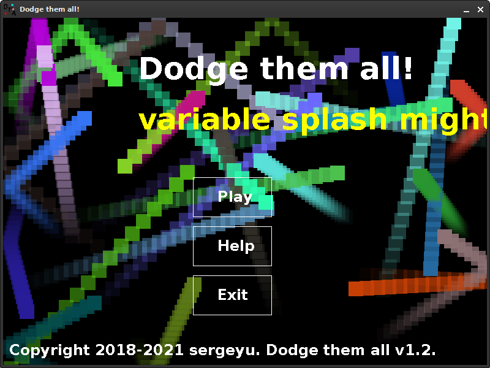Dodge Them All title screen
This is.. a title screen alright. Also it runs at like 5fps, which is not that surprising considering my system is really slow and the title screen background has bouncing blocks bouncing all over the place.
Now let's finally look at the gameplay! Pressing play we are greeted to the following.
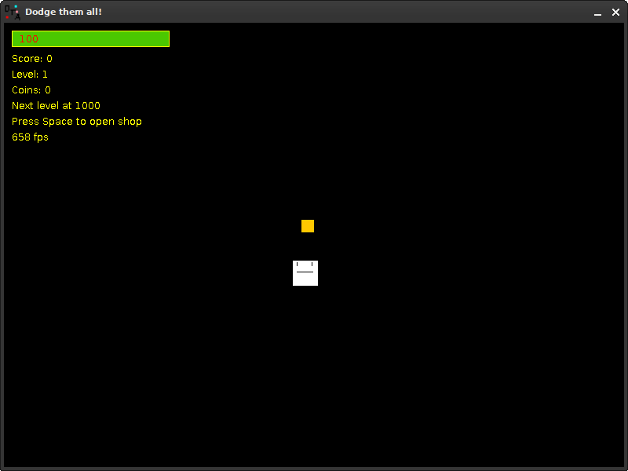Dodge Them All gameplay
First off, the game runs really poorly. But that is probably not the fault of the game having bad optimization, this is just my laptop (which is the same laptop I used to write this game) goofing off. Performance issues aside, let's look at the game. We can see:
Each time you level up, an enemy spawns. Also, I encountered a bug where after going to the next level my character started constantly going down for no reason. Bugs are something this game has a lot of. I did do some play testing but ultimately I had no idea what I was doing and couldn't really solve many issues. For example, there's a bug that causes coins not to produce sounds after collecting them (accompanied by an exception).
The player has 100 health initially. When you run out of health, the game is over. The game over screen looks like this.
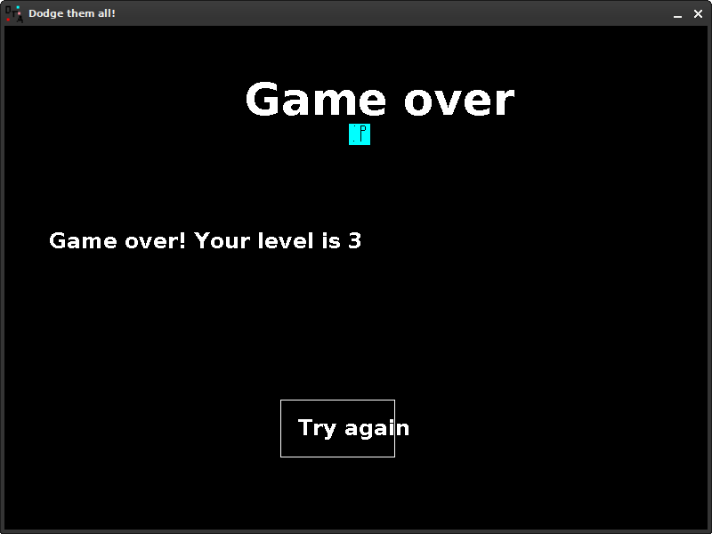Dodge Them All's game over screen
Yup that's the game over screen. Looks basic, just like everything else in this game. I mean, the description did state that its art was made in paint, so at least it's not lying. By the way, did you notice that cyan square guy? That's the result of me having absolutely no idea what the actual hell i was doing, so for whatever reason not all enemies actually despawned when you game-overed.
The game also has a boss, which is just a big red square shooting bullets, but I can't bother myself to actually play the game enough to get to it. Maybe you'll reach it, it's not that hard.
The game also features a shop where you can buy upgrades. You can upgrade your speed (I don't know why you would do that in a bullet-hell game), upgrade max health and refill health, all for coins you collect. Every time you buy something, it gets more and more expensive.
There's one last thing I want to talk about before ending this section, and that is the game's sounds.
The game's soundtrack is super basic and quite mid. It was made in a program called Bosca Ceoil, which is a simple tool for making music. There's nothing very special about it and it's like ten seconds long.
The sound effects are all "retro-styled" as the description puts it. They're all quite basic and not really worth talking about in depth.
Dodge Them All truly shows how much I have come in game development and programming in general in a relatively short amount of time (~3 years). And even if this game isn't that special or that good, it still holds a special place in my heart.
About a year after the release of DTA, I remade the entire game in Electron using JavaScript. Unlike the original, the rewrite is actually open source and can be found here, on GitHub. However, running it isn't as easy as just downloading and running an executable - you'll have to install Node.JS and Electron. I might want to publish pre-compiled builds.
I don't really consider this one "unfinished" per se, since I see the game as very complete, but still decided to include it here just for no reason.
When I tried to compile the game, I encountered several compilation issues. Luckily, all the compiled files were included in the source code, which is generally not what you're supposed to do but I didn't really know how to keep a GitHub repository back then so I'll let this one slide.
Unlike the last game, this one runs really well. Maybe the original is badly optimized... Eh, either way, here's the title screen:
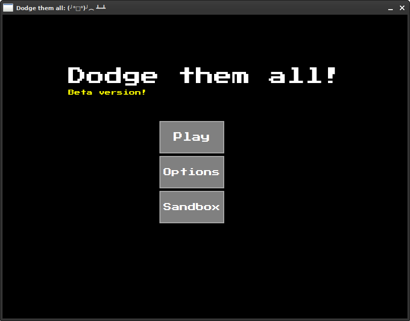DTARW title screen
Do you see it? A STYLIZED FONT!! Yep, instead of using a default font, this time we have a good font. That is very nice indeed. As per usual, the game's name, three buttons. Except this time, instead of an exit button we have a sandbox button. The sandbox is a feature that was supposed to be included in the original game, but in a tragic series of events I lost the original source code and couldn't write the feature anymore. Oh well. Instead of a yellow splash screen, we instead have a "Beta version!" label below the title text. This actually is a beta version, because I wanted to implement a couple features but I'm lazy ahh hell and I just forgot. Splash text is still in the game, but in a different form - now the game modifies the title of the window instead of adding text on the title screen. There are a total of a lot of splashes, half of which are making keyboard puns and jokes about this game being a rage game.
Enough rambling let's get into the action!!!!!!
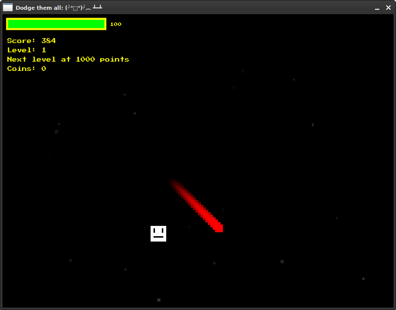DTARW gameplay
First impressions: way better than DTA. The background has little gray particles that kinda look like stars, the HUD is way better and the performance is ten billion percent better. You can even pause it by pressing Escape! The original game also technically had pause functionality when you go into the shop but having a dedicated pause screen is way nicer.
And what do you see? An enemy! The game prepares you to dodge enemies right from the beginning instead of giving you a random coin and expecting you to collect it. The scoring system was also changed quite a bit. Instead of score being incremented every time you pick up a coin (which can be super difficult when reaching higher levels with more enemies), score instead goes up automatically each frame. The shop is still here, and worse than ever. The only item in the shop is a health boost - +10HP for 7 coins. Inflation really hit DTA...
The rewrite still includes all of the same enemies that the original Java edition has, but more. Here's the full list of new guys that joined the family:
There's also the boss, but I'm not sure if he's actually functional. It's definitely a bug, since code that spawns the boss is included and I remember it working. IDK...
One of the defining features of this remake is the sandbox. This is a place where you can make your custom enemy!
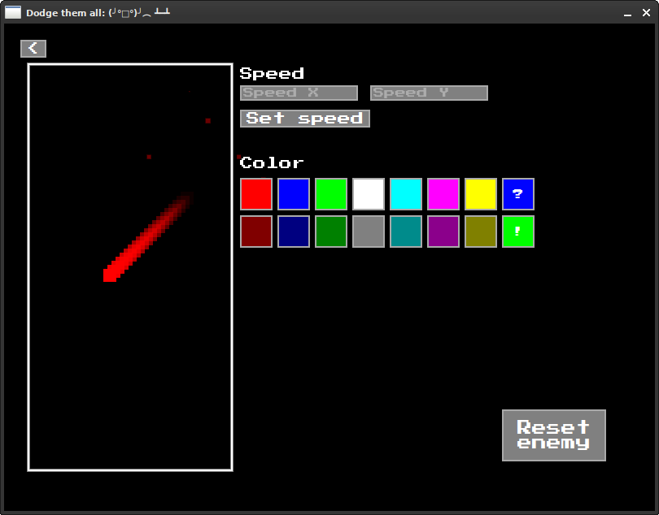Sandbox screen
I'm quite proud of this interface. So clean, so nice... Designing this was an absolute nightmare because of the sheer amount of UI elements in the sandbox. On the left, we have our custom enemy. He's in a box and can never escape. On the right, we can change the enemy however we want. First, we have the speed controls - changing the X and Y velocity. Below that is the enemy color chooser - red, green, blue, white, cyan, magenta, yellow and dark versions of all of them. There are two special buttons. The "?" button decides a color at random, and the "!" button brings up a box where you can set a color yourself based on RGB values. On the very bottom there is an enemy reset button which resets the enemy back to the same as a red one. Yeah, the sandbox is a bit underwhelming, but it is what it is.
The game does a bit better in terms of sound design. They're still "retro-styled" and there is nothing to say about them. They're alright. There's no background music to accompany you, though... I think that's better, actually. The ten-second track from the original can definitely make someone go nuts if they play for an extended period of time. Not that anyone would do that, however.
The Dodge Them All Rewrite is just a better, shinier, faster version of Dodge Them All. I don't know what to say, really. It's great you should play it if you really want to idk do whatever tf you want i don't care
JSHS is a simple home server software written in JavaScript. I made it when trying to make a home server. But then I found out about CasaOS, which is a lot better, better, better, and also prettier. JSHS features a simple file manager, very primitive security in the form of a single password, and that's basically it. I abandoned it once I found about about CasaOS, which was way better and more mature.
Pikurosu is a Nonogram/Picross game for PC. It was superceded by nonoSharp, which is active and isn't pure spaghetti code. I stopped working on this when I found out that C isn't a great language for gamedev (some might argue), and I was much more familiar with C#. So I switched to C# and made nonoSharp.
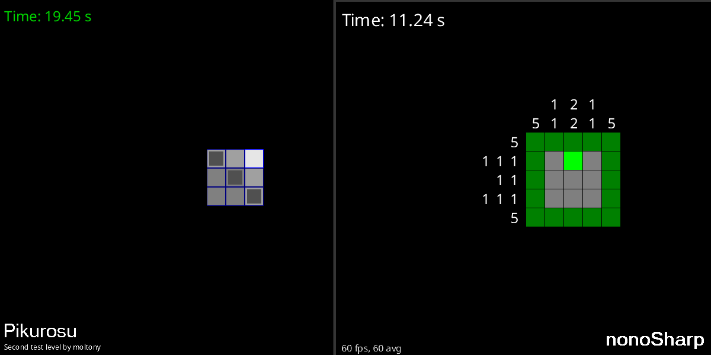Comparison of pikurosu and nonoSharp
NO NOT DTA AGAIN!!! This was supposed to be a rewrite of DTARW in C++. I simply did not want to. I'm done with this square dodge square thing!
a rewrite of a rewrite...
Number Go Up is a very very very simple game where you have to make the number go up
I abandoned this one because I don't use Windows anymore on my system and setting up GMS2 (which is the engine this game uses), well I'm too lazy for that
you spam your keyboard and number go up
number goes down
lwgh is a CLI tool for accessing GitHub. I made it back when I didn't like using the browser at all, but looking back... Browser is better anyway. Besides, the code I wrote for this little app was very spaghetti early on.
NDSvi is a text editor for the Nintendo DS heavily inspired by Vi. I created it because I wanted to edit some random save file manually for DS-Craft, but couldn't find a text editor app for the DS. In the middle of making this project, I discovered that it's possible to edit the melonDS emulated SD card files by simply removing the SD card image, editing the synced files in the SD card sync folder and then opening the emulator.
NDSvi running in melonDS
This is quite familiar to any of you who use Vim (myself included). The editor is in insert mode, some text is in the buffer, and the touch keyboard is there. How nice.
In the state that it's in, NDSvi supports the following features from Vi:
Despite supporting many cool Vi features, it doesn't have scrolling, hjkl, and its architecture is overall flawed.
PaintDS is a painting program for the Nintendo DS written in C. I created it because, as is the case with NDSvi, I couldn't find a painting application for the DS. I stopped developing this one because of two reasons: poor architecture and me not being able to display text, like, at all, no matter how hard i tried. Let's take a look at it!
Paint DS running in melonDS
The top screen is the least interesting part. It's just a scrolling line pattern, intended just so that there's something on the top screen. All the painting tools are on the bottom screen. On the bottom bar there are four tools: Pencil, Eraser, Fill and Shapes. On the top are the tool properties. Let's take a look at each tool.
The pencil tool is quite straightforward: touch the screen and draw whatever you like. You can even choose the color you want to draw with! There's black, red, green, blue, cyan, magenta, yellow, gray, dark red, dark green, dark blue, dark cyan, dark magenta and dark yellow. If you're wondering why there's no white color, that's because the eraser is used to draw in white (we'll look at the eraser in a bit). You can also choose the width of the stroke: thin, medium and T H I C C. And that is all, no more, no less.
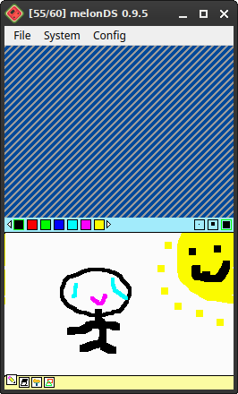A (poorly drawn) picture drawn using the Pencil tool.
The eraser tool is used to erase stuff. By "erase" I mean draw with white. Yeah, this app doesn't support transparency, so that's pretty much expected. You can either erase, wipe the whole screen or do a fill eraser (fill with white).
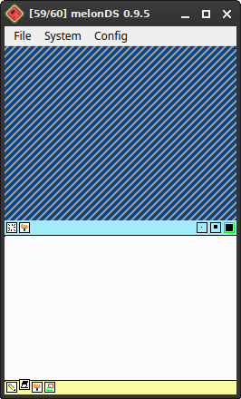The eraser tool interface
The fill tool is used to... fill. Color is chooseable from the same palette as the pencil tool.
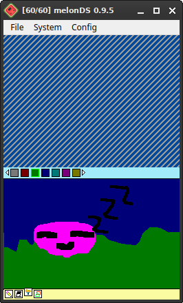The fill tool in action
The last tool available in Paint DS is the shape tool. It allows for the insertion of one of the five available shapes: triangle outline, filled triangle, straight line, rectangle outline and filled rectangle. The color selection is the same as always.
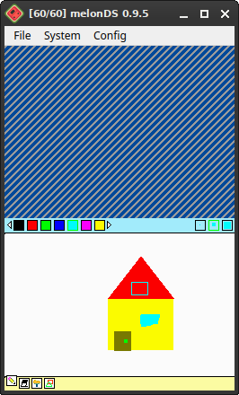A primitive house create using the shape tool.
This thing has one singular sound: the pencil sound. It plays when you draw.
Paint DS is an application with huge potential! It can allow people to create art on the go and that's... pretty much it? I don't know how to market a painting app. Anyway, this is cool and all but the architecture was absolute garbage. And I couldn't figure out how to draw text on the screen.
of course we have one
this is revision 4.1
Revision history